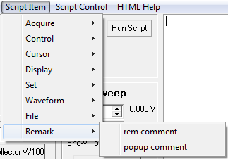

|  |
rem comment Use for comment lines. The keyword rem makes the script program ignor any text that follows on the line. popup comment This command pauses the script program, brings up a small form and waits for the user to press the OK button before proceeding. Any comment text that follows the popup command is displayed on the pop up form. Main |